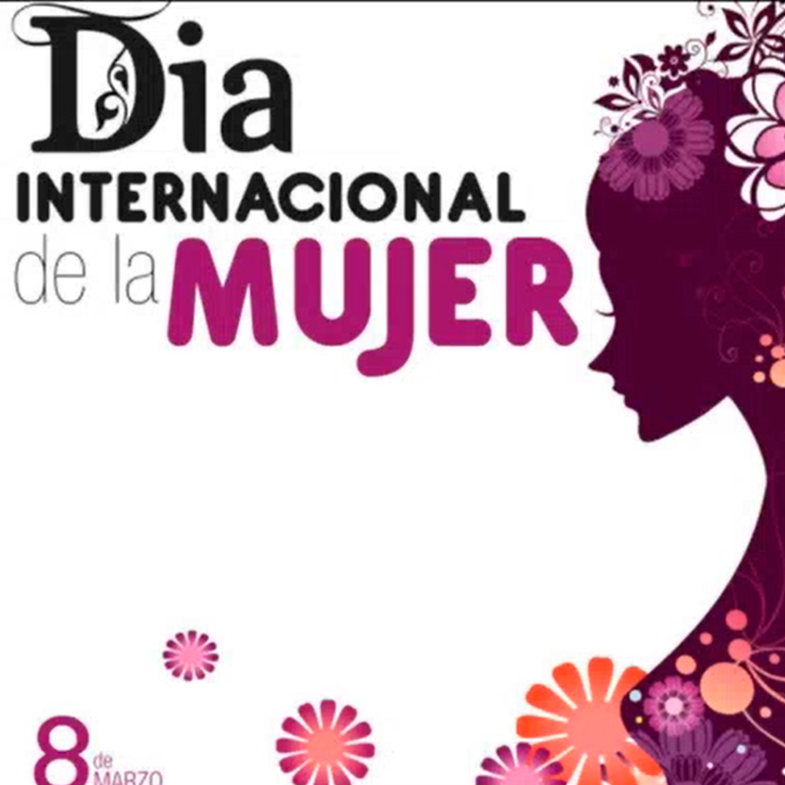
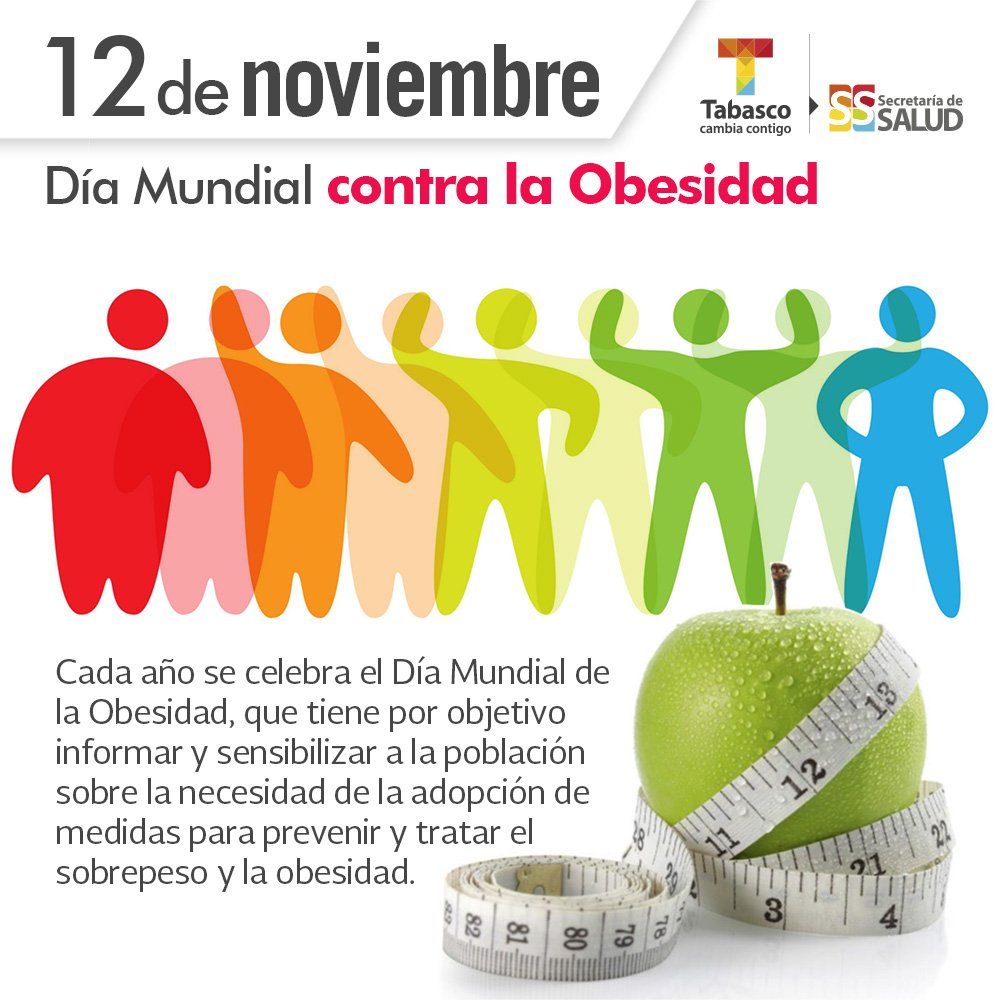

Los futuros mexicas recibieron la orden de su dios guía, Huitzilopochtli,
para abandonar el lugar donde se encontraban e iniciar un peregrinar hasta
descubrir la señal que él les había prometido: un águila devorando una serpiente,
mientras estaba posada sobre un nopal.
Demas noticias
Un levantamiento de Zapata
Armas arriba en 1911
El fin de los pasteles
Conflicto entre Fancia y México
Día internacional de la mujer

Cada 8 de marzo, Día Internacional de la Mujer, es necesario recordar la
importancia de reconocer la historia de los derechos políticos, sociales,
económicos de las mujeres y niñas que siguen luchando por un mundo igualitario,
libre de violencia y discriminación.
Nacimiento de una cantante
Historia de Lola Beltrán
El fin de una corregidora
La muerte de doña Josefa
Día mundial contra la obesidad

La obesidad es una enfermedad crónica, progresiva en la cual una persona acumula una cantidad excesiva
de grasa corporal que puede ser perjudicial para su salud.